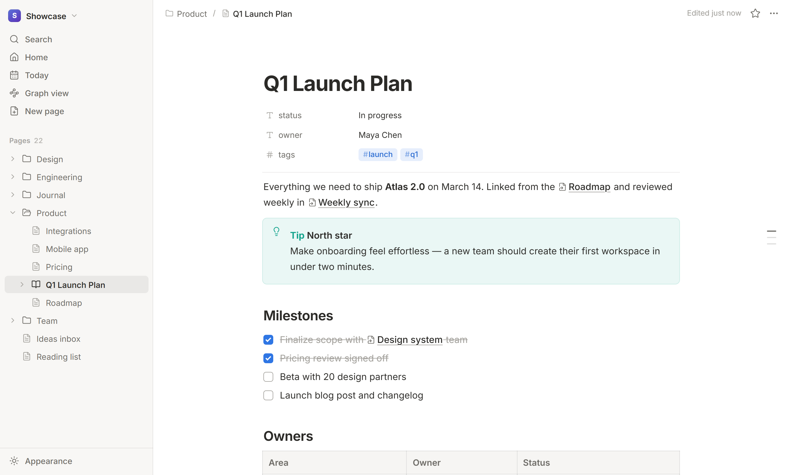
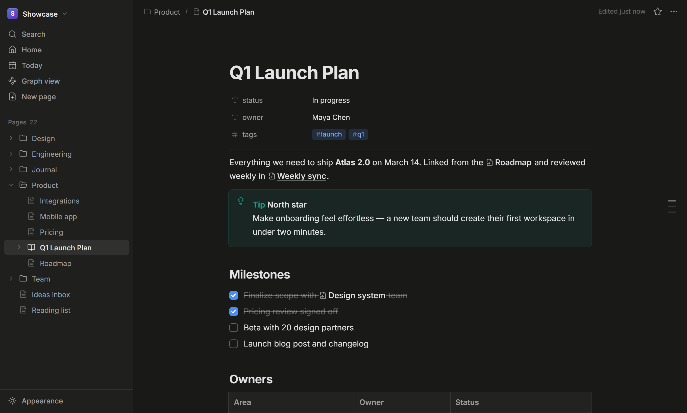
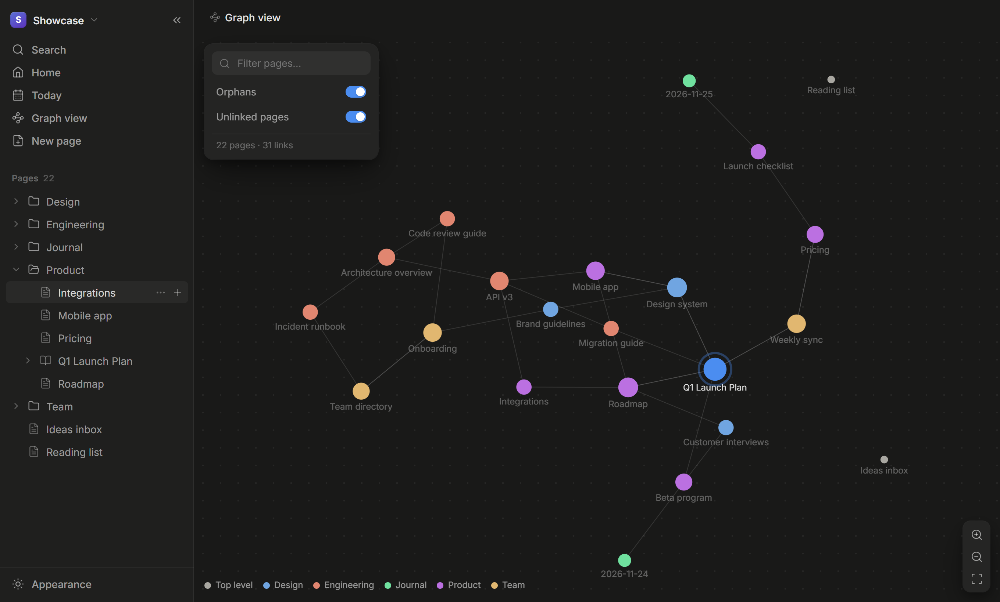
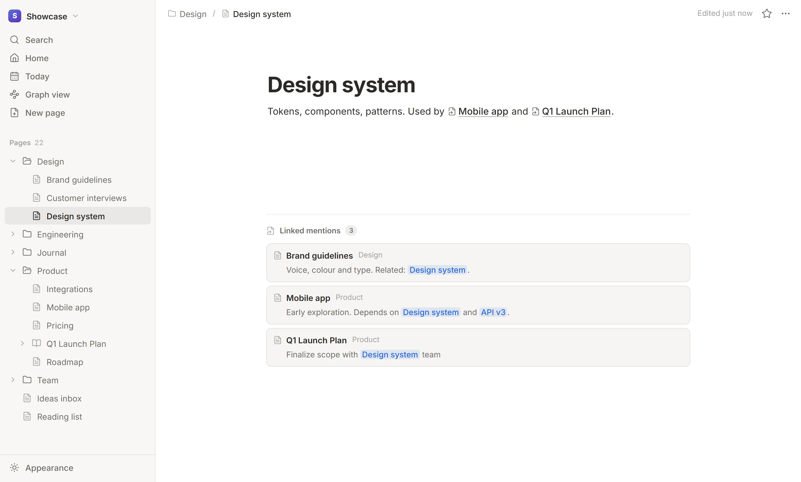
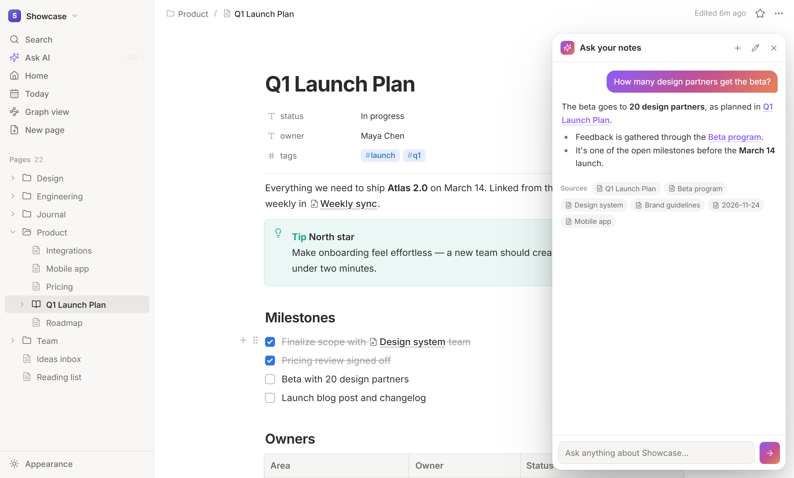
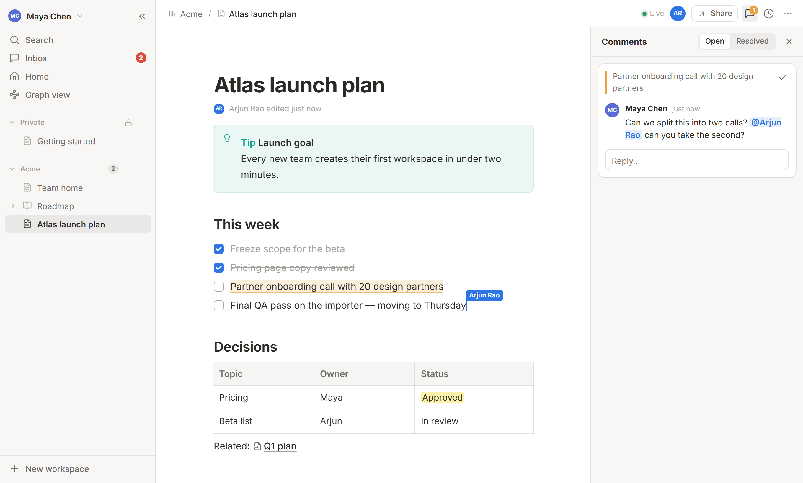

A calm, Notion-style editor for plain markdown files. Link ideas with [[wikilinks]], see how they connect, and keep every word in files you own. Works with your Obsidian vault.


No markdown syntax in your way, no proprietary database underneath. Just a clean page and a folder of files.
Headings, checklists, tables, callouts and code render as you type — the file underneath stays clean, readable markdown.
Press / for any block, select text for formatting, drag blocks with the handle. Keyboard-first, mouse-friendly.
See every page and link as an interactive map. Filter, zoom, drag — or open a local graph around the page you’re on.
Type [[ to link a page. Every page shows what links to it — plus unlinked mentions you might want to connect.
Meeting notes, project briefs, wiki pages — one click. A fresh daily note every morning, using Obsidian’s settings.
Ctrl K finds any page by name or content, runs commands, and creates new pages without leaving the keyboard.
Local Notes builds a living map of your knowledge from the links you already write.

Nest pages the way you think. Breadcrumbs, subpages and backlinks keep a growing wiki easy to navigate.

Rewrite, summarize and draft with AI — then ask questions and get answers that cite the pages they came from.

Run the team server on your own machine or cloud — one command with Docker. Shared workspaces, a private space for everyone, and edits that appear as you type.

See teammates’ cursors and edits as they happen. Shared notes are still saved as markdown on your server.
Every person keeps a private space. Run separate workspaces per team, share any page with selected people, or keep pages to invited people only.
Discuss any sentence, @mention teammates, restore any earlier version, and catch up from one inbox.
One app for Windows, macOS and Linux. Updates install themselves.
All releases are on GitHub.
In a normal folder you choose — your “vault”. Every page is a .md file and subpages are folders. Nothing is uploaded anywhere; you can open, back up or sync the folder with any tool you like.
Yes. Point Local Notes at your vault and keep using both. Wikilinks, embeds, callouts, tags, ==highlights==, frontmatter, templates and daily-note settings are all understood, and files are only rewritten when you edit them.
Yes — Local Notes is free and open source under the MIT licence.
Early releases aren’t code-signed yet. On Windows choose More info → Run anyway. On macOS, right-click the app in Applications and choose Open the first time.
Someone on your team runs the free team server (a single Docker command, with automatic HTTPS). Everyone then connects from the desktop app or simply opens the server’s address in a browser. Shared pages are also mirrored as markdown files on the server, so your knowledge never gets locked in.
Only when you use an AI feature, and only what that feature needs — the selected text, the current page, or for Ask your notes the few pages most relevant to your question. Requests go directly to the provider you configured, or stay on your computer with Ollama. Read more.
Yes. Pages in your private space are only visible to your account; the server enforces it. Team workspaces are visible to their members only.
Download Local Notes and open any folder of markdown files.
Download for free